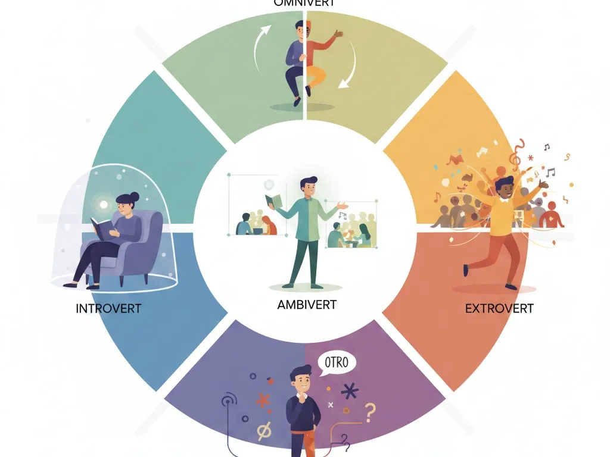

Introvert, Extrovert, Ambivert, Omnivert, and Otrovert
This article provides brief overviews of five descriptions of personality types.
Originally published to:
These two things got me started on this topic:
- https://www.linkedin.com/posts/dimitrios-a-karras-39a89826_a-new-classification-term-is-emerging-in-activity-7403832094033969152-qCd2
- https://www.ladbible.com/community/personality-type-otrovert-explained-dr-rami-kaminski-378511-20250912
Much of this is paraphrased or copied directly from the Internet or AI.
I don't know that everyone fits distinctly into one of these categories. I seem to relate to Otrovert best. I think it's very improtant to accept these tendencies in yourself and others.
-
Introvert: Typically a reserved, quiet, potentially shy and sensitive person who tends to be introspective and enjoys spending time alone.
- More comfortable interacting with small groups of people rather than large groups.
- Enjoys solitude.
- Some may be afraid of people.
-
Extrovert: Typically a gregarious, affable, and less reserved person who enjoys and seeks out social interaction.
-
Ambivert: Generally balanced and operates in the middle of the spectrum, adapting their traits to the situation
-
Omnivert: Shifts between extreme introversion and extreme extroversion, often depending on the situation, mood, or energy level.
- One day they might be the life of the party (fully extroverted), and the next they might be completely withdrawn and seeking solitude (fully introverted).
-
Otrovert: Defined by a feeling of "otherness" and feeling no intrinsic sense of belonging to any group or collective identity.
- Enertized by thinking their own thoughts and being independent.
- Prefers one-on-one, deep conversations over group mingling or large team activities.
- Can interact and even be popular within groups but struggle with the relationship to the group as an entity, feeling like an outsider.
- Craves connection but only on their own, often unconventional, terms.
- Tend to go against the grain, resist mainstream social norms, and are not tied to trends or social expectations.
- Often characterized as freethinkers, highly independent, and imaginative.
- Lack of concern for fitting in or fear of rejection often allows creative flourishing.
- May experience emotional discomfort or a sense of being misunderstood due to the discrepancy between their abilities and lack of connection.
- Independence allows them to forge stronger, more meaningful bonds with the few people to whom they are close.
- Can feel energized in groups but can quickly feel alienated by mainstream social norms and may prefer to slip away quietly.
- Defined by their differences, standing just outside the expected--neither fully in nor fully out.
- Doesn't always want to fit in and is seen as a selective socializer.